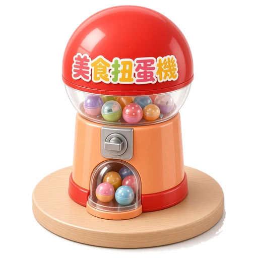
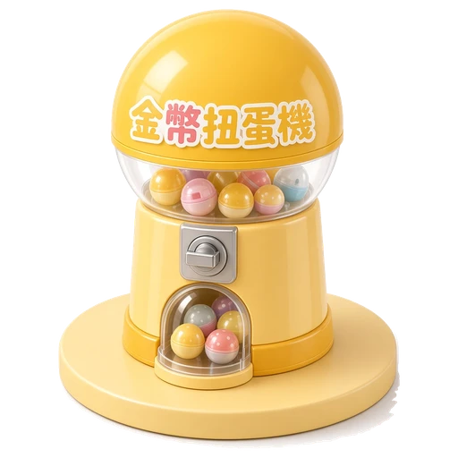

載入中…
老師還沒開放這個遊戲
發現食譜 0 / 31
答題 0・正確率 —

每次先答 3 題（國語、數學都有），答對 2 題以上才能轉
美食扭蛋機會轉出什麼？
常見 70%
一次拿 10 份
一次拿 10 份
少見 25%
一次拿 5 份
一次拿 5 份
稀有 5%
一次拿 2 份
一次拿 2 份

金幣扭蛋機
用餐廳賺的家鄉幣換金幣，金幣在所有遊戲都能用。
2 金幣 50%3 金幣 30%5 金幣 15%7 金幣 4%10 金幣 1%
最近轉到的食材
右上角的數字是你現在有幾份。灰色的是還沒轉到過的食材。
⚠️ 遊戲中的食譜、食材用量和圖片都是為了遊戲設計的，只在遊戲裡使用，和真正的做法不一樣，請勿輕易模仿。想在家下廚時，請和大人一起。
今天賺的家鄉幣0 / 500